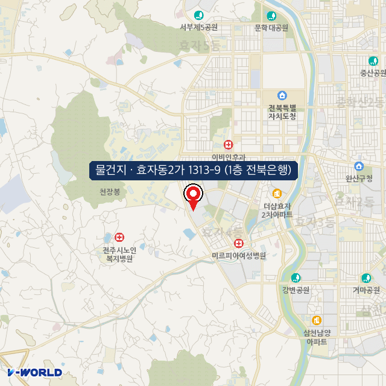
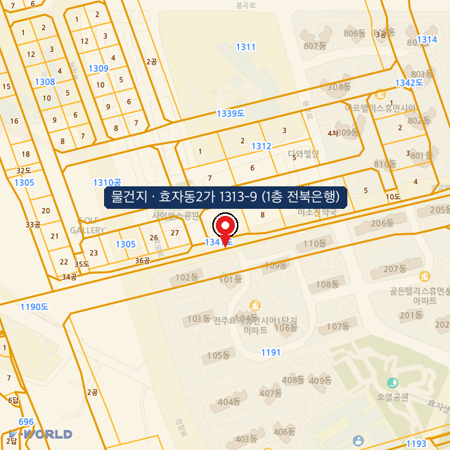
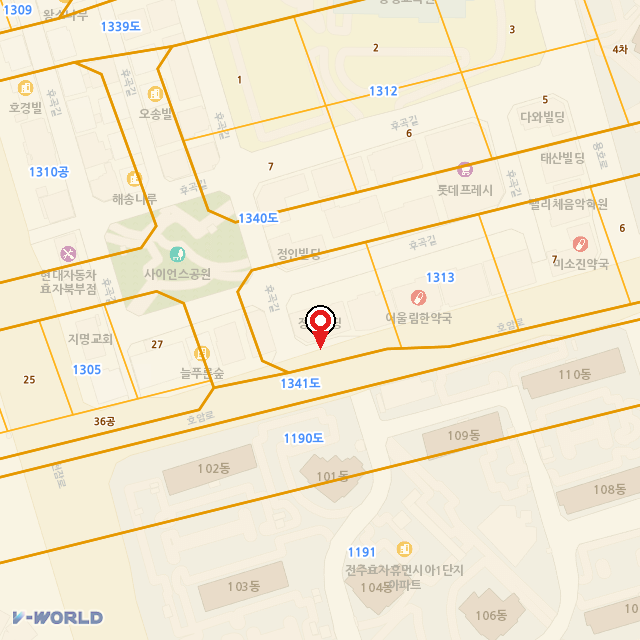

NPL VALUATION · 물건지 상권분석
상권분석 & NPL 자산평가
보고서
대상지: 전주시 완산구 효자동2가 1313-9
1층 전북은행 입점 근린상가
2026. 07. 06 · VWorld 무료 API 실측 기반
INTERNAL · NPL 1차 스크리닝용 · 대외비
상권분석 & NPL 자산평가 보고서
담보물건 전주시 완산구 효자동2가 1313-9(1층 전북은행 입점)를 대상으로, 공시지가→추정 감정가→(유료)실거래·경매가 밸류에이션 체계와 상권평가 항목을 적용한 NPL 1차 스크리닝 자료입니다. 전 과정 VWorld 무료 API 실측 기반이며, 실거래·경매·정식 감정가는 유료/별도키 항목으로 명확히 구분했습니다.
물건 요지: 전북특별자치도청 서측 효자동 신시가지 행정타운 내, 대규모 아파트단지(전주효자휴먼시아 등) 배후의 근린상업 정형 대지(698.4㎡·약 211평). 1층에 전북은행 지점이 임차 운영 중으로, 안정적 임대수익형 담보물건에 해당.
1. 물건 개요 (무료 API 실측)
| 항목 | 내용 | 출처 |
|---|
| 소재지 | 전북특별자치도 전주시 완산구 효자동2가 1313-9 | 토지대장 |
| 지목 | 대(垈) | 무료 |
| 면적 | 698.4㎡ (약 211평) | 무료 |
| 소유구분 | 개인 | 무료 |
| PNU | 5211114100113130009 | 무료 |
| 임차 현황 | 1층 전북은행 지점 (임대수익형) | 현장/제시 |
용도지역·규제 (무료)
- 제2종일반주거지역 (저촉)
- 제1종지구단위계획구역 (포함)
- 택지개발지구 (포함) — 신시가지 계획지
- 중로1류(20~25m)·소로1류(10~12m) 접함 — 양호한 접도
입지·규제 요약
접도 우수: 중로1류(20~25m)·중로3류(12~15m)·소로1류 복수 접함 — 코너 가시성·차량 접근성 양호. 은행 지점 입지로 적합.
제1종지구단위계획·택지개발지구 내 계획적 신시가지 상업지로, 배후 아파트 세대 밀집. 다만 용도지역이 제2종일반주거여서 상업지역 대비 용적률·업종에 제약 — 밸류에이션 시 반영.
물건지 위치도 — 원거리·중거리·클로즈업 (배경지도+지적도+마커 · 무료 API 합성)

▲ 원거리 — 전북도청·효자동 행정타운·아파트 밀집 광역 위치

▲ 중거리 — 근린상권·사이언스공원·휴먼시아단지 + 마커

▲ 클로즈업 — 필지 형상·접도·인근 근생(약국·병원·마트)
2. 가격 밸류에이션 — 4단 검증 체계
1. 공시지가(무료·실측)
123만/㎡
2026 기준 · 하한선
3. 추정 감정가
12.9~17.2억
현실화율 1.5~2.0배
공시지가 추이 (무료 시계열 실측)
| 연도 | 2023 | 2024 | 2025 | 2026 |
|---|
| 원/㎡ | 1,228,000 | 1,231,000 | 1,269,000 | 1,229,000 |
|---|
※ 4년간 공시지가 거의 보합(2025 소폭 상승 후 2026 조정). 지방 도청권 행정타운의 안정적이나 저성장 시세 특성을 반영 — 서울 강남 대비 가격 상승 모멘텀은 제한적이나 배후수요 견고.
추정 감정가 = 공시지가 1,229천원/㎡ × 현실화율 1.5~2.0 × 698.4㎡ ≈ 12.9억 ~ 17.2억원
감정가 개념: 위 추정치는 1차 스크리닝용(공시지가×현실화율 역산)이다. 확정 감정가는 ⓐ 경매 감정가(지지옥션 등 유료) 또는 ⓑ 감정평가법인 의뢰(유료)로 확보하며, ⓒ 인근 실거래가(별도키 무료)로 시세 교차검증한다. 특히 1층 전북은행 임대수익형이므로 수익환원법 병행 평가가 핵심.
3. NPL 자산평가 기준 적용 (감정평가 3방식)
| 방식 | 본 물건 적용 | 필요 데이터 | 확보 |
|---|
| ① 원가법 | 토지(대 698.4㎡) + 건물 재조달원가−감가. 상가건물 존재 시 건물비중 가산 | 공시지가·건축비 | 무료 |
| ② 거래사례비교 | 효자동 신시가지 인근 근린상가·대지 실거래·경매 비교보정 | 실거래·경매가 | 별도키/유료 |
| ③ 수익환원법 핵심 | 1층 전북은행 임대료(NOI) ÷ Cap Rate. 우량 임차인(은행)으로 공실위험 낮고 임대수익 안정 → 본 물건 주 평가방식 | 임대료·Cap Rate | 상권/실사 |
NPL 회수가치(RV) = 감정가 × 낙찰가율 − (선순위채권 + 명도·비용) → 매입적정가 = RV × (1 − 목표수익률)
임차인 프리미엄: 1층에 전북은행 지점이 입점 — 지역 대표 금융기관으로 장기 안정 임차·높은 신용. 경매 진행 시에도 임대차 승계 여부에 따라 수익형 매수 수요가 형성되어 낙찰가율 방어에 유리. 다만 은행 지점 철수·계약만료 리스크는 별도 실사 필요(임대차계약서·잔여기간 확인).
4. 상권분석 평가항목 (본 물건 적용)
| 항목 | 본 물건 상태 | 소스 | 비용 |
|---|
| 입지 | 전북도청 서측 효자 신시가지, 중로1류 접면 정형 211평 | VWorld | 무료 |
| 가격 | 공시 123만/㎡ (4년 보합, 지방 안정형) | VWorld | 무료 |
| 배후수요 | 전주효자휴먼시아 등 대규모 아파트단지 밀집 (세대수 확인 필요) | 상권정보 API | 별도키 |
| 업종·경쟁 | 약국·병원·마트·프랜차이즈 등 근린 생활상권 형성 (인접 롯데프레시·약국 다수) | 상권정보 API | 별도키 |
| 접근성 | 중로1류(20~25m)·소로1류 복수 접면, 코너 입지 (지오코딩 완료) | VWorld | 무료 |
| 앵커테넌트 | 1층 전북은행 — 유동·집객 앵커, 상가가치 견인 | 제시/현장 | - |
상권 총평: 전북도청·행정기관 종사자 + 대단지 아파트 배후의 안정적 근린 생활상권. 유흥·유행 의존도가 낮아 경기 변동에 방어적. 1층 은행 앵커로 집객력 확보. 지방 특성상 급격한 시세 상승보다 안정적 임대수익 회수에 적합한 물건 유형.
5. 무료/유료 범위 — 데이터 경계
■ 무료로 확보됨 (본 건 실측)
- 지번·지목·면적·소유구분·PNU
- 공시지가 시계열(2023~2026)
- 용도지역·규제(지구단위·택지개발지구 등)
- 지적도 이미지 · 지오코딩 좌표 · 3단 위치도
- → 공시기반 1차 추정 감정가
■ 유료/별도키 필요 (미확보)
- 실거래가 (공공데이터 무료키 발급 시)
- 상권 유동인구·배후세대·업종 (무료키)
- 1층 전북은행 임대료·계약잔여기간 (실사)
- 경매 감정가·낙찰가율 (유료)
- 정식 감정평가액 (유료 외주)
6. 리스크 & 다음 단계
주요 리스크: ① 용도지역이 제2종일반주거여서 상업지 대비 활용도 제약 · ② 지방 시세 저성장(자본이득 제한, 임대수익 중심 회수) · ③ 은행 임차 종료 시 대체 임차 확보 난이도 · ④ 지오코딩 지번과 등기부 소재지 최종 대조 필요.
- 즉시(무료): 등기부 열람으로 지번·소유·선순위 근저당 확인 + 지적도 확정
- 단기(무료키): 공공데이터포털 키로 인근 근린상가 실거래·상권 배후세대 검증
- 실사(핵심): 1층 전북은행 임대차계약서(보증금·월세·잔여기간) 확보 → 수익환원법 정밀 산정
- 선별(유료): 매입 검토 시 경매 감정가·낙찰가율 확보 → RV 확정
- 확정(유료): 최종 후보만 정식 감정평가 의뢰
※ 본 보고서는 무료 VWorld API 실측 기반이며, 지번·소유·권리관계는 등기부로 최종 확인 필요. 추정 감정가는 스크리닝용으로 정식 감정평가를 대체하지 않습니다. 1층 전북은행 임차 조건은 실제 임대차계약서로 검증 전제. 매입 의사결정 시 권리분석(변호사)·감정평가(감정평가사)를 전제로 합니다. 대외비.